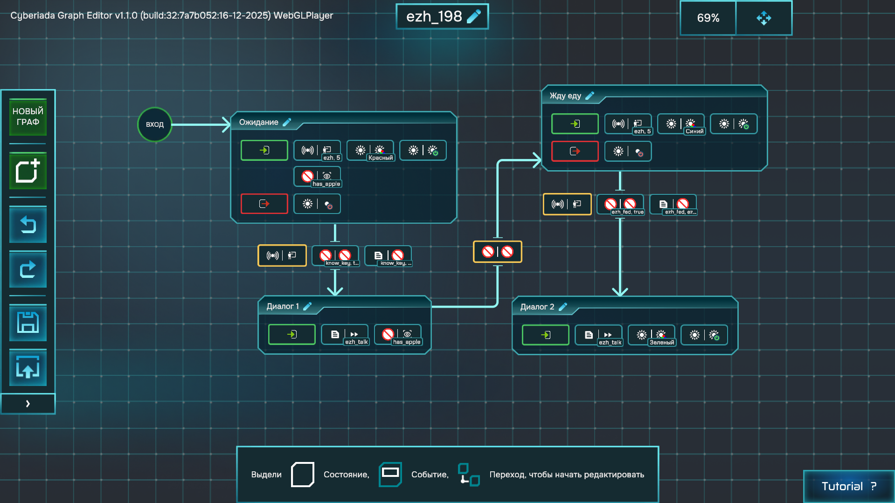
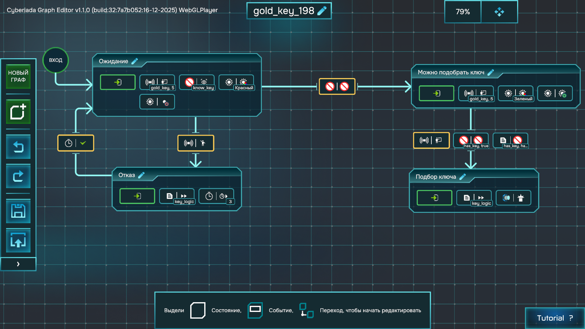
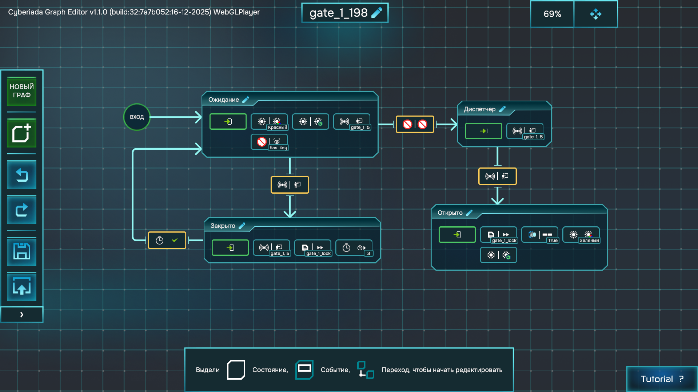
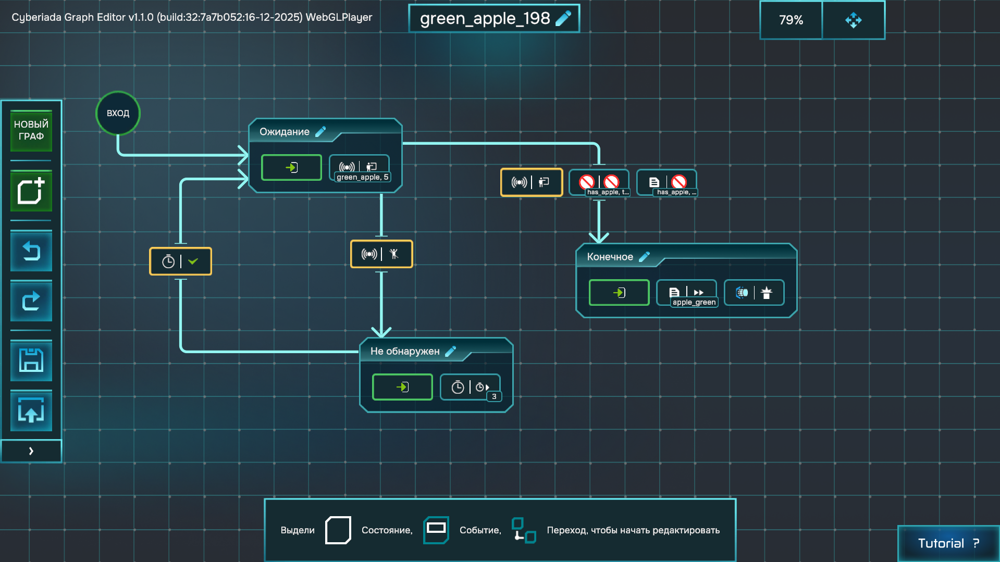
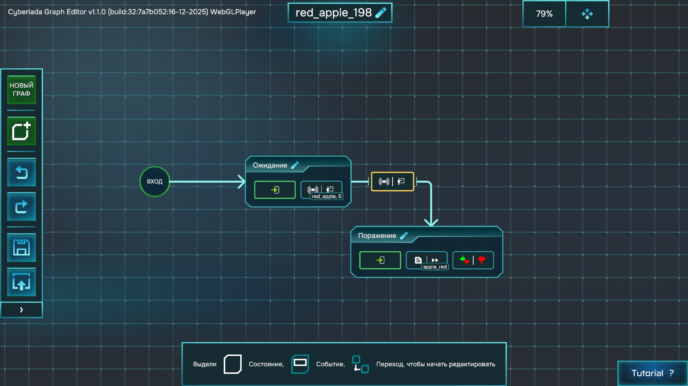
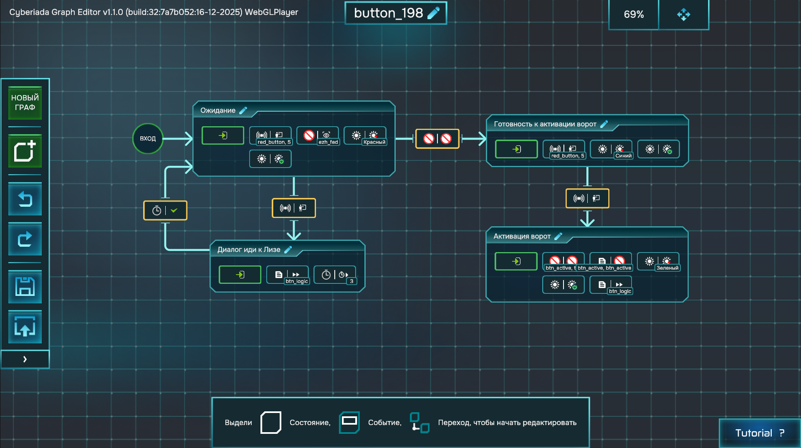
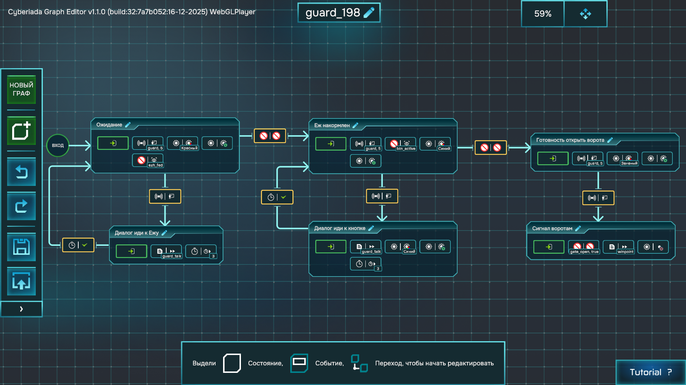
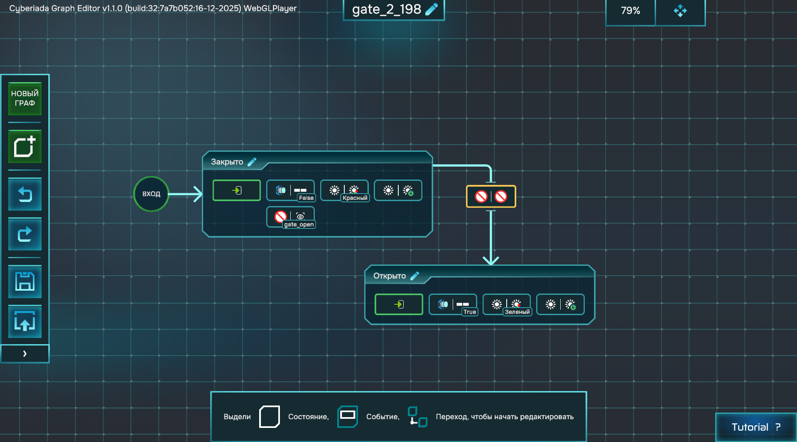
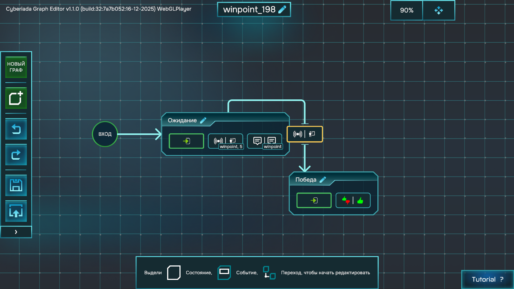

Часть 2 курса
Разбор игры «Опасные яблоки»
Это пример готовой мини-игры, где ПРИМС управляет логикой объектов, а Ink-сценарий показывает реплики и объясняет игроку, что происходит.
Что это за игра
«Опасные яблоки» — короткий квест-лабиринт про последовательность условий. Игрок появляется в небольшой 3D-сцене, разговаривает с персонажами, ищет предметы, открывает ворота и в конце добирается до флага. На первый взгляд это простая прогулка, но внутри почти каждый объект проверяет состояние мира: знает ли игрок про ключ, есть ли ключ в инвентаре, взято ли зеленое яблоко, накормлен ли ёж, нажата ли кнопка, открыт ли финальный проход.
Главная идея игры: путь вперед открывается не сразу, а через цепочку понятных причин и следствий. Игрок не просто нажимает на все подряд. Он получает подсказку, проверяет гипотезу, возвращается к нужному объекту и видит, как мир меняется после его действий.
Игровая цель
Цель игрока — добраться до флага и завершить уровень победой. Для этого нужно пройти две зоны ворот. Первые ворота учат базовому правилу: «нужен ключ». Вторые ворота проверяют уже более длинную цепочку: «нужно помочь ежу, получить разрешение, активировать кнопку и дождаться открытия прохода».
Такой дизайн удобен для обучения: первая задача маленькая и понятная, вторая повторяет тот же принцип, но добавляет больше объектов и переменных.
Основной игровой цикл
- Исследовать: игрок ходит по сцене и ищет, с чем можно взаимодействовать.
- Получить подсказку: NPC или объект объясняет, почему путь закрыт и что нужно сделать.
- Найти предмет или условие: игрок ищет ключ, яблоко, кнопку или нужного персонажа.
- Изменить состояние мира: после действия меняется переменная, объект исчезает, индикатор меняет цвет или ворота становятся проходимыми.
- Вернуться и проверить: игрок пробует пройти дальше и видит, что предыдущее действие действительно повлияло на мир.
Ключевые механики
| Механика | Как работает в игре | Зачем нужна игроку |
|---|---|---|
| Диалог | Ёж и робот Лиза говорят с игроком и меняют реплики в зависимости от прогресса. | Подсказки объясняют, что делать дальше, без отдельной инструкции от учителя. |
| Ключ и ворота | Ключ становится доступен после разговора, а первые ворота открываются только при has_key = true. | Игрок видит классическое правило: предмет открывает препятствие. |
| Полезный предмет | Зеленое яблоко можно подобрать и отдать ежу. | Предмет становится частью квеста, а не просто декорацией. |
| Опасный предмет | Красное яблоко похоже на полезное, но приводит к поражению. | Появляется риск: не все яркие объекты безопасны, нужно читать подсказки. |
| Индикатор состояния | Ворота и кнопка могут показывать, доступны они сейчас или нет. | Игрок получает визуальную обратную связь, а не угадывает внутренние переменные. |
| Финальное условие | Флаг завершает игру победой только после прохождения цепочки. | Уровень получает понятную цель и завершение. |
Геймдизайн: почему цепочка работает
Игра построена как учебный квест с постепенным усложнением. Сначала игрок встречает простое закрытое препятствие: ворота не пропускают без ключа. Затем появляется социальная задача: ёж просит яблоко, а Лиза реагирует на то, помог ли игрок ежу. После этого включается техническая задача: кнопка и финальные ворота связаны переменными.
Каждый этап добавляет новый тип связи между объектами. Ключ связан с воротами напрямую. Яблоко связано с ежом через инвентарь. Ёж связан с Лизой через факт помощи. Лиза и кнопка связаны с финальными воротами через сигнал открытия. В результате ученик видит, что игра — это не один большой скрипт, а сеть маленьких объектов, которые обмениваются состояниями.
Риск, награда и выбор
В «Опасных яблоках» есть два похожих предмета: зеленое и красное яблоко. Зеленое продвигает квест, красное приводит к поражению. Это простая, но важная геймдизайнерская конструкция: игрок должен не только собирать предметы, но и понимать контекст.
Красное яблоко делает уровень менее линейным. Если бы на сцене были только нужные объекты, игрок просто шел бы по списку. Опасный предмет добавляет проверку внимания: нужно слушать NPC, читать реплики и замечать сигналы, которые игра дает заранее.
Обратная связь
Игрок должен понимать, что его действие сработало. Поэтому в игре используются несколько видов обратной связи: предмет исчезает после подбора, персонаж меняет реплику, индикатор меняет состояние, ворота становятся проходимыми, финальный флаг запускает победу. Это важнее, чем кажется: без обратной связи игрок не узнает, изменилась ли переменная внутри игры.
Роли объектов в уровне
| Объект | Роль в дизайне | Чему учит |
|---|---|---|
| Ёж | Первый квестодатель и проверка предмета. | Диалог может менять состояние мира и открывать следующий шаг. |
| Золотой ключ | Классический пропуск через препятствие. | Предмет может быть недоступен до нужного события. |
| Первые ворота | Понятный барьер с условием. | Проходимость объекта зависит от переменной. |
| Зеленое яблоко | Полезный предмет для квеста. | Подбор предмета должен менять память игры. |
| Красное яблоко | Ловушка и плохой финал. | Поражение тоже является состоянием игры. |
| Робот Лиза | Навигатор по середине квеста. | NPC может проверять несколько этапов прогресса. |
| Кнопка | Технический переключатель финального прохода. | Один объект может готовить событие для другого объекта. |
| Финальные ворота | Последний барьер перед победой. | Состояние мира может открывать новый маршрут. |
| Флаг | Ясная точка завершения. | Победа должна быть отдельным финальным событием. |
Квестовая цепочка
- Ёж: игрок разговаривает с NPC и узнает про ключ.
- Ключ: становится доступен после переменной
know_key. - Первые ворота: открываются, если есть
has_key. - Зеленое яблоко: подбирается и ставит
has_apple = true. - Ёж: получает яблоко и ставит
ezh_fed = true. - Робот Лиза: после кормления ежа направляет игрока к кнопке.
- Кнопка: активирует
btn_active = true. - Робот Лиза: подает сигнал
gate_open = true. - Финальные ворота: открываются.
- Флаг: взаимодействие с ним вызывает победу.
Диаграммы игры

ezh_198
Ёж выдает информацию о ключе, ждет яблоко и после кормления открывает следующий этап квеста.

gold_key_198
Ключ нельзя взять сразу. После разговора с ежом он становится доступным и исчезает при подборе.

gate_1_198
Первые ворота показывают красный индикатор, пока нет ключа, и становятся проходимыми после условия.

green_apple_198
Полезный предмет. При подборе ставит переменную has_apple и удаляется со сцены.

red_apple_198
Ловушка. При взаимодействии вызывает поражение и показывает сюжетную реакцию.

button_198
Терминал с кнопкой. До кормления ежа отказывает, после — активирует финальные ворота.

guard_198
Робот Лиза проверяет этапы квеста: сначала отправляет к ежу, потом к кнопке, затем открывает финальный путь.

gate_2_198
Финальные ворота слушают переменную gate_open и открываются после сигнала Лизы.

winpoint_198
Победный флаг. Показывает подсказку и завершает игру победой при взаимодействии.
Диаграмма 1: Ёж
Ёж — первый квестовый NPC. Его задача не просто «поговорить с игроком», а запустить всю цепочку игры. До разговора игрок не знает, что нужно искать ключ. После первого диалога появляется знание о ключе, затем ёж ждёт еду, а после получения зеленого яблока открывает следующий этап квеста.
Роль в геймдизайне
Ёж работает как мягкое обучение. Он не открывает ворота сам и не выдает победу, но объясняет первую цель и делает мир осмысленным. Игрок узнает, что у предметов и персонажей есть состояния: ёж сначала ждёт разговора, потом ждёт яблоко, потом реагирует на выполненную просьбу.
Состояния диаграммы
| Состояние | Что означает | Что делает игрок |
|---|---|---|
Ожидание | Ёж стоит в сцене и ждёт первого взаимодействия. В этом состоянии проверяется, есть ли у игрока яблоко. | Подходит к ежу и нажимает взаимодействие. |
Диалог 1 | Первый разговор. Ёж сообщает про ключ и переводит игру к следующей задаче. | Читает подсказку и понимает, что нужно искать ключ. |
Жду еду | Ёж уже объяснил первую цель и теперь ждёт зеленое яблоко. | Ищет яблоко и возвращается к ежу. |
Диалог 2 | Финальная реакция ежа после кормления. Квестовый этап с ежом закрывается. | Получает подтверждение, что просьба выполнена. |
Какие модули используются
- Событие взаимодействия: запускает переход, когда игрок обращается к ежу.
- Проверка переменной: отличает ситуацию «яблока ещё нет» от ситуации «яблоко уже принесено».
- Ink-реплика: показывает текст диалога и объясняет игроку следующий шаг.
- Установка переменной: после первого разговора фиксирует
know_key = true, а после кормления —ezh_fed = true. - Визуальный индикатор: помогает показать, в каком режиме находится NPC: ждёт, просит предмет или уже получил еду.
Почему это не линейный скрипт
Диаграмма ежа не должна читаться как список команд сверху вниз. Это машина состояний. Если игрок пришёл без яблока, ёж остаётся в логике ожидания еды. Если игрок пришёл с яблоком, включается другой переход и происходит кормление. Один и тот же NPC по-разному отвечает на одно и то же действие игрока, потому что меняется состояние мира.
Что важно проверить в игре
- Первый диалог действительно ставит
know_key = true, иначе ключ или следующая подсказка не откроются. - Без зеленого яблока ёж не должен переходить в состояние «накормлен».
- После кормления должна установиться переменная
ezh_fed = true, потому что её проверяют следующие объекты квеста. - После второго диалога игрок должен понимать, что этап с ежом завершён и можно идти дальше.
Диаграмма 2: Золотой ключ
Золотой ключ — первый предмет-пропуск. Он нужен, чтобы открыть первые ворота, но игра не должна позволять игроку забрать его слишком рано. Поэтому ключ сначала находится в состоянии ожидания и проверяет переменную know_key: если игрок ещё не поговорил с ежом, предмет отказывает; если подсказка уже получена, ключ становится доступным.
Роль в геймдизайне
Ключ связывает диалог с исследованием. Разговор с ежом не просто показывает текст, а меняет правила мира: после него игрок получает право забрать предмет. Это делает подсказку полезной механикой, а не декоративной репликой.
Состояния диаграммы
| Состояние | Что означает | Что видит игрок |
|---|---|---|
Ожидание | Ключ существует в сцене, но ещё проверяет, знает ли игрок о нём. | Игрок может подойти и попробовать взаимодействовать. |
Отказ | Игрок пытается взять ключ до разговора с ежом. | Игра объясняет, что пока непонятно, зачем нужен этот предмет. |
Можно подобрать ключ | Переменная know_key уже установлена, поэтому предмет становится доступным. | Ключ визуально готов к подбору, например через зелёный индикатор. |
Подбор ключа | Игрок забирает ключ, игра ставит has_key = true и убирает предмет со сцены. | Ключ исчезает, а путь к первым воротам становится осмысленным. |
Какие модули используются
- Проверка переменной: читает
know_keyи решает, можно ли подбирать ключ. - Событие взаимодействия: срабатывает, когда игрок пытается взять предмет.
- Ink-реплика отказа: объясняет, почему предмет пока нельзя забрать.
- Индикатор: меняет визуальное состояние ключа с «нельзя» на «можно».
- Установка переменной: при подборе записывает
has_key = true. - Скрытие или удаление объекта: убирает ключ после подбора, чтобы игрок не мог взять его повторно.
Почему ключ не лежит «просто так»
Если бы ключ можно было взять сразу, игрок мог бы случайно пропустить разговор с ежом и не понять причинно-следственную связь. Ограничение через know_key заставляет сначала получить смысл задачи, а уже потом забрать инструмент для её решения.
Что важно проверить в игре
- До разговора с ежом ключ не должен ставить
has_key = true. - После
know_key = trueключ должен перейти в доступное состояние. - После подбора ключ должен исчезнуть или стать недоступным для повторного взаимодействия.
- Первые ворота должны реагировать именно на
has_key, а не на сам факт разговора с ежом.
Глобальные переменные
| Переменная | Что значит |
|---|---|
know_key | Игрок поговорил с ежом и знает, где ключ. |
has_key | Игрок подобрал золотой ключ. |
has_apple | Игрок взял зеленое яблоко. |
ezh_fed | Ёж накормлен и может поручиться за игрока. |
btn_active | Красная кнопка нажата. |
gate_open | Финальные ворота получили сигнал на открытие. |
Что изучаем на этом примере
- Как ПРИМС-диаграммы разных объектов связываются через переменные.
- Как цвет индикатора помогает игроку понимать состояние объекта.
- Как предмет может исчезнуть после подбора.
- Как ворота меняют проходимость.
- Как диалог объясняет, почему игрок пока не может пройти дальше.
Задания
- Нарисуйте схему квестовой цепочки «Опасных яблок» без кода.
- Выберите одну диаграмму и объясните ее однокласснику простыми словами.
- Придумайте замену: вместо яблока, ключа и ворот используйте другие предметы, но сохраните такую же логику.
- Добавьте один плохой финал и один хороший финал.